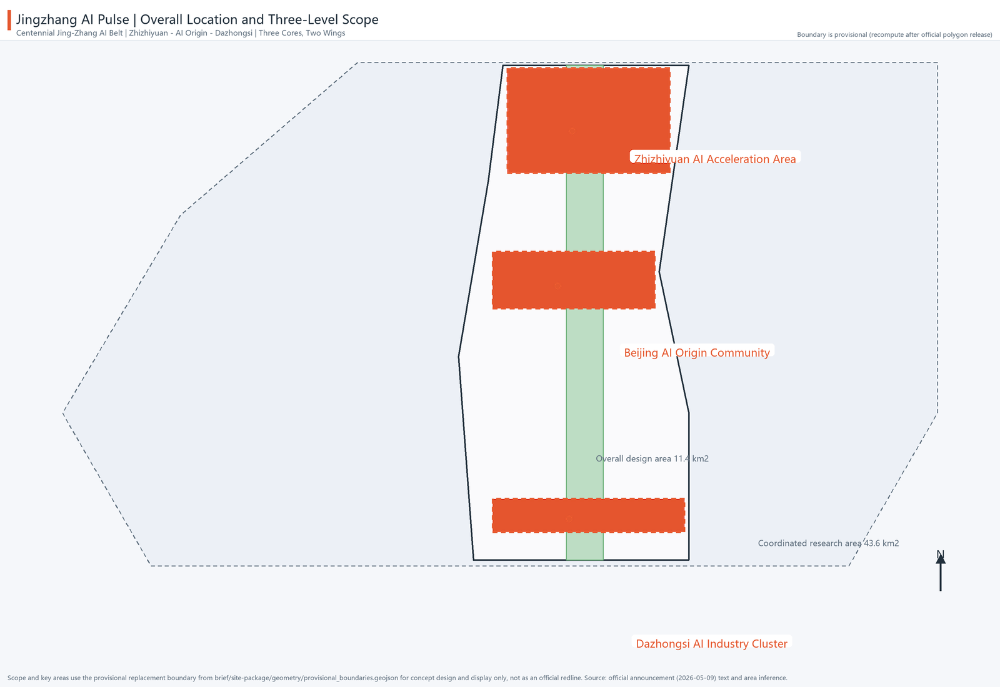

Centennial Jing-Zhang AI Innovation Belt · Proposal Dashboard
The Jing-Zhang heritage park corridor is the north-south spine, linking Zhizhiyuan, the AI Origin Community, and Dazhongsi, with the Zhongguancun Service Wing and the Xiaoyuehe Scenario Wing.

Full-stack innovation · Qinghe frontage · open testing & safety governance
Near-campus transformation · open-source release · talent zone
Intelligent economy · station integration · international roadshow
Coordinated research area (43.6 km2), overall design area (11.4 km2), and key detailed design area (368.4 ha) are shown in the site-overview figure; the boundary is the organization's provisional replacement boundary and must be recomputed after official polygon release.
land_use.geojson closes the boundary with eight categories: research 27.5%, commercial services 25.3%, park green 18.2%, residential 15.1%, etc.; buildings.geojson provides 24 conceptual footprints; regulatory conditions (FAR/height) await official confirmation.
The Jingzhang AI Pulse east/west auxiliary roads and cross-linking roads organize the north-south spine and the three-cores-two-wings links; the blue-green slow loop connects 5 public-space nodes (see the mobility-bluegreen figure).
phasing.geojson defines three phases: near-term key-area core start-up (2026-2028), mid-term heritage park corridor stitching (2029-2031), and long-term two-wings function introduction and quality uplift (2032-2035).
10 AI scenario cards (including 3 industry test/validation scenarios), 5 user personas, 6 global ecosystem cases, and 4 AI pilgrimage landmarks / honor-display nodes (covers agent.2/3/4).
self_check.json records deterministic validation, bilingual packaging, spatial review, visualization, and professional evidence-chain results; this package is package_state=ready_for_review with a provisional boundary, and self-check must be rerun after official polygon replacement.
SITE-PACKAGE — brief/site-package/SOURCE-REGISTRY — data/source_registry.jsonPROCESSED-FACT-PACK — data/processed/agent_fact_pack.mdBOUNDARY-SOURCE — brief/site-package/geometry/provisional_boundaries.geojsonKEY-AREA-SOURCE — brief/site-package/geometry/provisional_boundaries.geojsonOFFICIAL-ANNOUNCEMENT — https://ghzrzyw.beijing.gov.cn/zhengwuxinxi/tzgg/hd/202605/t20260509_4643047.htmlAGENT-TASKBOOK — brief/site-package/agent_taskbook.json